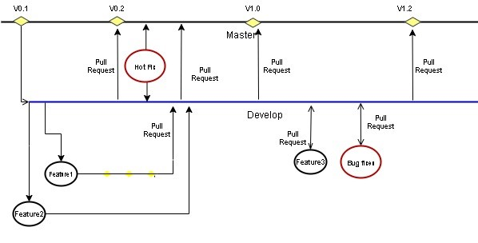

9. Branch Management Guidelines¶

The community can have two main branches with an infinite lifetime:
- Master branch: This is a highly stable branch that is always production-ready and contains the last release version of source code in production.
- Development branch: Derived from the master branch, the development branch serves as a branch for integrating different features planned for an upcoming release. This branch may or may not be as stable as the master branch. It is where developers collaborate and merge feature branches. All of the changes should be merged back into the master somehow and then tagged with a release number.
Apart from those two primary branches, there are other branches in the workflow:
- Feature Branch: Forked from the development branch for feature development i.e. enhancement or documentation. Merged back to the development branch after feature development or enhancement implementation.
- Bug Branch: Ramify from the development branch. Merged back to the development branch after bug fixing.
- Hotfix branch: Hotfix branches are created from the master branch. It is the current production release running live and causing troubles due to a severe bug. But changes in development are yet unstable. We may then branch off a hotfix branch and start fixing the problem. It should be the rarest occasion, in case only critical bugs.
Note: Only NLE and NECTI members have the privilege to create and merge the Hotfix branch.
| Branch | Branches naming guideline | Remarks |
|---|---|---|
| Feature branches | Must branch from: development. Must merge back into: development. Branch naming convention: feature-feature_id | feature_id is the Github issue id from https://github.com/ScorpioBroker/ScorpioBroker/issues |
| Bug Branches | Must branch from: development. Must merge back into: development. Branch naming convention: bug-bug_id | bug_id is the Github issue id from https://github.com/ScorpioBroker/ScorpioBroker/issues |
| Hotfix Branches | Must branch from: master branch. Must merge back into: master branch. Branch naming convention: hotfix-bug number. | Bug number is the Github issue id from https://github.com/ScorpioBroker/ScorpioBroker/issues . |
9.1. Permissions to the branches:¶
- Master - We tend to very strict that only NLE members and privileged members of NECTI can merge on the Master branch and accept the pull requests. Pull requests to master can be raised by only NECTI OR NLE members.
- Development - Any community member can raise the pull request to the development branch but it should be reviewed by NLE or NECTI members. Development branches commits will be moved to the master branch only when all the test cases written under NGSI-LD test suites, will run successfully.